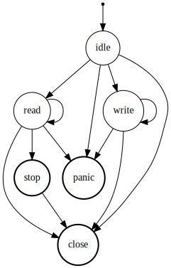

Developer's notes
These notes are not for end users but rather for developers who are interested in the design of the package.
TranscodingStream type
TranscodingStream{C,S} (defined in src/stream.jl) has three fields:
codec: data codec (<:C where C<:Codec)stream: data stream (<:S where S<:IO)state: current state (<:State).
A codec will be implemented by package developers and only a special codec Noop is defined in this package. A stream can be any object that implements at least Base.isopen, Base.eof, Base.close, Base.bytesavailable, Base.unsafe_read, and Base.unsafe_write. All mutable fields are delegated to state and hence the stream type itself is immutable.
A stream has two buffers in the state field. These are used to store pre-transcoded and transcoded data in the stream. The stream passes references of these two buffers to the codec when processing data. The following diagram illustrates the flow of data:
When reading data (`state.mode == :read`):
user <--- |state.buffer1| <--- <stream.codec> <--- |state.buffer2| <--- stream
When writing data (`state.mode == :write`):
user ---> |state.buffer1| ---> <stream.codec> ---> |state.buffer2| ---> streamIn the read mode, a user pull out data from state.buffer1 and pre-transcoded data are filled in state.buffer2. In the write mode, a user will push data into state.buffer1 and transcoded data are filled in state.buffer2. The default buffer size is 16KiB for each.
State (defined in src/state.jl) has five fields:
mode: current stream mode (<:Symbol)code: return code of the last codec's method call (<:Symbol)error: exception returned by the codec (<:Error)buffer1: data buffer that is closer to the user (<:Buffer)buffer2: data buffer that is farther to the user (<:Buffer)
The mode field may be one of the following value:
:idle: initial and intermediate mode, no buffered data:read: being ready to read data, data may be buffered:write: being ready to write data, data may be buffered:stop: transcoding is stopped after read, data may be buffered:close: closed, no buffered data:panic: an exception has been thrown in codec, data may be buffered but we cannot do anything
Note that mode=:stop does not mean there is no data available in the stream. This is because transcoded data may be left in the buffer.
The initial mode is :idle and mode transition happens as shown in the following diagram: 
Modes surrounded by a bold circle are a state in which the transcoding stream has released resources by calling finalize(codec). The mode transition should happen in the changemode!(stream, newmode) function in src/stream.jl. Trying an undefined transition will thrown an exception.
A transition happens according to internal or external events of the transcoding stream. The status code and the error object returned by codec methods are internal events, and user's method calls are external events. For example, calling read(stream) will change the mode from :init to :read and then calling close(stream) will change the mode from :read to :close. When data processing fails in the codec, a codec will return :error and the stream will result in :panic.
Shared buffers
Adjacent transcoding streams may share their buffers. This will reduce memory allocation and eliminate data copy between buffers.
readdata!(input::IO, output::Buffer) and writedata!(output::IO, input::Buffer) do the actual work of read/write data from/to the underlying stream. These methods have a special pass for shared buffers.
Noop codec
Noop (NoopStream) is a codec that does nothing. It works as a buffering layer on top of the underlying stream. Since NoopStream does not need to have two distinct buffers, buffer1 and buffer2 in the State object are shared and some specialized methods are defined for the type. All of these are defined in src/noop.jl.